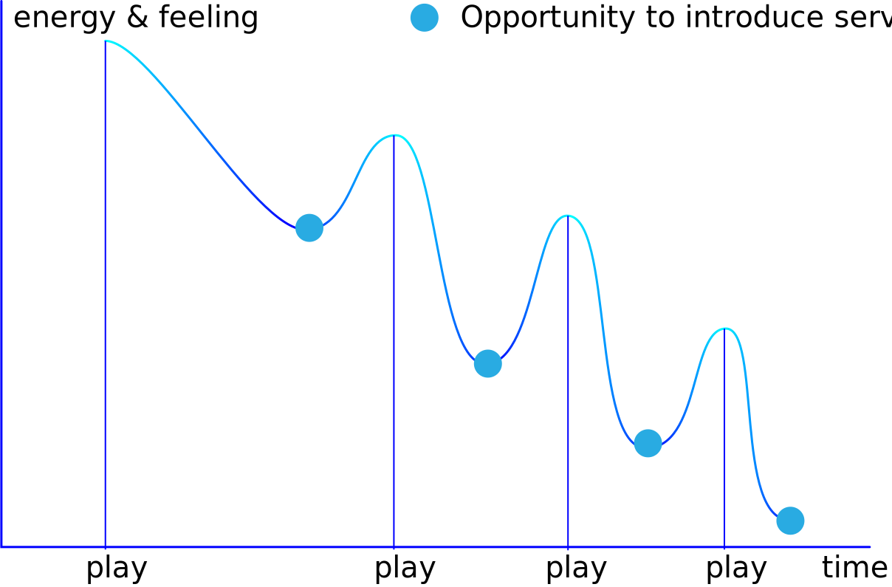
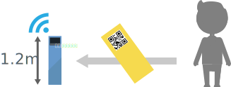

Magicar is a real project when I attended the special topic design hosted by Wei Wang in 2018.The whole workshop continued for two weeks.I did the research with a teamate and drew a rough idea of automatic drive in theme parks by myself.
Research & Reflection

Trough the fild research,we found that there is a number of strong willings to join the service when after a long walk between two game projects.It's the key to help the tourists to buy and accede to the service.

So,tourists' tickets which were able to store the data of tourists with a QR code on itself are the best running thread of the whole journey.
System Map